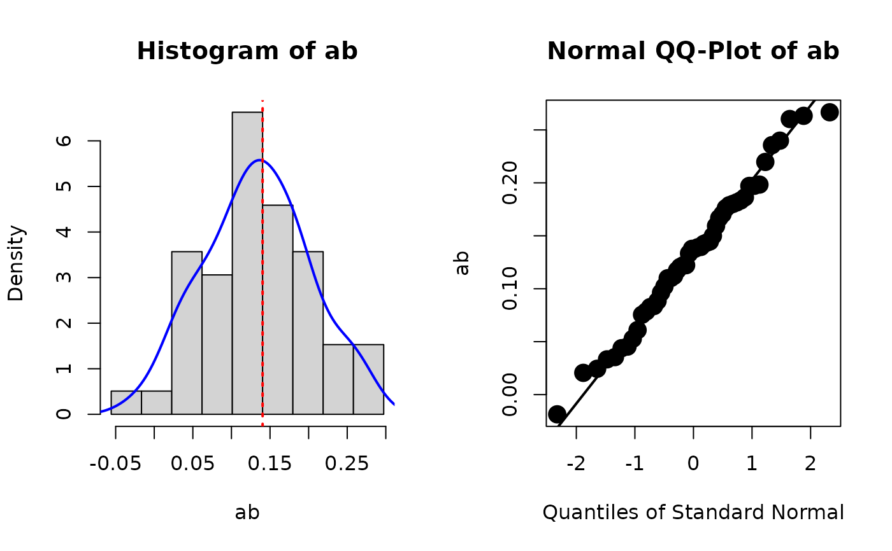

Plots for examining the
distribution of bootstrap estimates
in a model fitted by lavaan.
Usage
plot_boot(
object,
param,
standardized = NULL,
nclass = NULL,
hist_color = "lightgrey",
hist_linewidth = 1,
density_line_type = "solid",
density_line_color = "blue",
density_line_linewidth = 2,
est_line_type = "dotted",
est_line_color = "red",
est_line_linewidth = 2,
qq_dot_size = 2,
qq_dot_color = "black",
qq_dot_pch = 16,
qq_line_linewidth = 2,
qq_line_color = "black",
qq_line_linetype = "solid"
)Arguments
- object
A lavaan::lavaan object with bootstrap estimates stored. For standardized solution and user-defined parameters, the estimates need to be stored by
store_boot_est_std()orstore_boot_def().- param
String. The name of the parameter to be plotted, which should be the name as appeared in a call to
coef().- standardized
Logical. Whether the estimates from the standardized solution are to be plotted. Default is
NULL. This is a required parameter and users need to explicitly set it toTRUEorFALSE.- nclass
The number of breaks. This argument will be passed to
hist(). Default isNULL.- hist_color
String. The color of the bars in the histogram. It will be passed to
hist()for the argumentcol. Default is"lightgrey".- hist_linewidth
The width of the borders of the bars in the histogram. Default is 1.
- density_line_type
String. The type of the line of the density curve in the histogram. It will be passed to
lines()for the argumentlty. Default is"solid".- density_line_color
String. The color of the density curve in the histogram. It will be passed to
lines()for the argumentcol. Default is"blue".- density_line_linewidth
The width of the density curve in the histogram. It will be passed to
lines()for the argumentlwd. Default is 2.- est_line_type
String. The type of the vertical line in the histogram showing the point estimate of the parameter. It will be passed to
abline()for the argumentlty. Default is"dotted",- est_line_color
String. The color of the vertical line showing the point estimate in the histogram. It will be passed to
abline()for the argumentcol. Default is"red".- est_line_linewidth
The width of the vertical line showing the point estimate in the histogram. It will be passed to
hist()for the argumentlwd. Default is 2.- qq_dot_size
The size of the points in the normal QQ-plot. It will be passed to
qqnorm()for the argumentcex. Default is 2.- qq_dot_color
String. The color of the points in the normal QQ-plot. It will be passed to
qqnorm()for the argumentcol. Default is"black".- qq_dot_pch
Numeric. The shape of the points in the normal QQ-plot. It will be passed to
qqnorm()for the argumentpch. Default is 16.- qq_line_linewidth
The width of the diagonal line to be drawn in the normal QQ-plot. It will be passed to
qqline()for the argumentlwd. Default is 2.- qq_line_color
String. The color of the diagonal line to be drawn in the normal QQ-plot. It will be passed to
qqline()for the argumentcol. Default is"black".- qq_line_linetype
The type of the diagonal line to be drawn in the normal QQ-plot. Default is
"solid".
Value
Return the original lavaan::lavaan object invisibly. Called for its side-effect (plotting the graphs).
Details
Rousselet, Pernet, and Wilcox (2021)
argued that when using bootstrapping,
it is necessary to examine the distribution
of bootstrap estimates. This can be
done when boot::boot() is used
because it has a plot method for
its output. This cannot be easily
done in model fitted by lavaan::lavaan().
The function plot_boot() is used for
plotting the distribution of bootstrap
estimates for a model fitted by
lavaan in a format similar to that
of the output of boot::boot(), with
a histogram on the left and a normal
QQ-plot on the right.
For free parameters in a model
(unstandardized), it can be called
directly on the output of lavaan
and retrieves the stored estimates.
For estimates of user-defined parameters,
call store_boot_def() first to compute
and store the bootstrap estimates
first.
For estimates in standardized solution,
for both free and user-defined
parameters, call store_boot_est_std()
first to compute and store the bootstrap
estimates in the standardized solution.
References
Rousselet, G. A., Pernet, C. R., & Wilcox, R. R. (2021). The percentile bootstrap: A primer with step-by-step instructions in R. Advances in Methods and Practices in Psychological Science, 4(1), 1--10. doi:10.1177/2515245920911881
Author
Shu Fai Cheung https://orcid.org/0000-0002-9871-9448
Examples
library(lavaan)
data(simple_mediation)
mod <-
"
m ~ a * x
y ~ b * m + x
ab := a * b
"
fit <- sem(mod, simple_mediation,
se = "bootstrap",
bootstrap = 50,
iseed = 985714)
# Can plot bootstrap estimates for
# free parameters directly
# Note that 'standardized' must be always be set to
# either TRUE or FALSE. No default value.
plot_boot(fit, "a", standardized = FALSE)
# For estimates of user-defined parameters,
# call store_boot_def() first.
fit <- store_boot_def(fit)
plot_boot(fit, "ab", standardized = FALSE)

# For estimates in standardized solution,
# call store_boot_est_std() first.
fit <- store_boot_est_std(fit)
plot_boot(fit, "a", standardized = TRUE)
plot_boot(fit, "ab", standardized = TRUE)